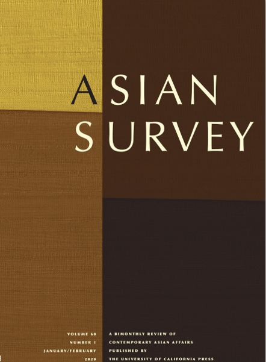

收录于合集

国政学人(International Politics Scholars)本周将隆重推出【国别研究】专栏，推荐内容源于《亚洲调查》（Asian
Survey）杂志于2020年初专题推出的世界各国2019年发展综述，这些综述对我们整体把握全球经济、政治与社会发展动态具有较强的参考价值。公众号后台（会话页面）回复“
亚洲调查 ”即可 阅读本专栏系列文章。 **
计划更新预告：东北亚：朝鲜、韩国、日本；东南亚：越南、新加坡、马来西亚；南亚中亚：印度、阿富汗；大国研究：美国、俄罗斯，敬请关注。 **
**
作品简介
【作者】 约翰·德鲁里（John Delury）是美中关系中心高级研究员、延世大学国际研究助理教授。他曾在哥伦比亚大学、布朗大学和北京大学教授中国历史和政治，并在耶鲁大学获得中国历史博士学位。
【编译】 杨帆（国政学人编译员，外交学院国际关系研究所）
【审校】 阮含含
【排版】 王国伟
【来源】
John Delury（2020）.North Korea in 2019：A Year of Strategic Adjustment. Asian Survey, Vol. 60 No. 1, January/February 2020; (pp. 69-78) DOI: 10.1525/as.2020.60.1.69

期刊简介

《亚洲调查》（Asian Survey）创刊于1961年，是美国唯一的同类学术期刊, 提供了有关南亚、东南亚和东亚国家内当代国际关系的全面回顾，关注亚洲国家发展重大进展中的特殊主题和年度回顾。该期刊是由加利福尼亚大学出版社出版的同行评审学术期刊，以双月刊形式发行。
2019 年的朝鲜：战略调整的一年
North Korea in 2019: A Year of Strategic Adjustment
John Delury
内容提要
2019年是朝鲜转型的一年，面对持续的国际制裁，朝鲜领导人金正恩坚持全力发展经济的战略调整。金正恩与美国和韩国的峰会外交陷入停滞、与中国的关系明显改善、与俄罗斯的关系略有改善。美国和韩国恢复了规模较小的联合军事演习而朝鲜恢复了短程导弹试验。
关键词 ：金正恩，朝鲜，经济发展，无核化，峰会外交，朝韩关系
文章导读
如果说2019年朝鲜有什么标志性的景象，那就是金正恩骑着白马站在朝鲜人民神话的诞生地，同时也是金氏家族权力象征的白头山上。这张照片与2018年秋天形成了鲜明的对比，当时金正恩在同一地点微笑着与韩国总统文在寅合影。而19年，金正恩独自一人在山坡上骑行，官方媒体暗示，最高领导人做出了一个重大决定，但对具体内容含糊其辞。
朝鲜在2019年的特点是调整、过渡和不确定性的阴云密布。金正恩与文在寅在板门店、平壤和白头山，以及与特朗普在新加坡举行的大胆的和平与无核化峰会，给人们带来了巨大的希望。但在河内的“无协议”（no deal）峰会后，挫折、失望和怀疑取代了原有的期望，而这种情绪对于朝鲜半岛屡见不鲜。然而与美国之间的僵局并没有让金正恩退缩，他自发接受了特朗普的推特邀请，于6月底在非军事区举行了一场临时会议。与此同时4月，他前往符拉迪沃斯托克与普京举行峰会，并于6月在平壤接待中方领导人，从而加强了与邻近大国的关系，特别是中朝关系在这一年中得到了显著改善。
2018年，金正恩宣布了一条将全力投入经济发展的革命性新战略路线。2019年，他强调实现新目标的关键是通过自己的力量复兴，这是一个传统的中朝社会主义口号。尽管金正恩把重点放在了经济上，但经济并没有明显的增长迹象;此外，尽管美国正在采取“极限施压”政策，但也没有迹象表明朝鲜存在财政危机。朝鲜将开辟一个新的未来，但要根据自己的条件和自己的时间表来进行。改革的进程将继续在很大程度上取决于刚在8月份被宪法赋予国家元首身份的35岁的金正恩。这是战略转型和调整的一年:并非一切都按计划进行，接下来会发生什么仍不清楚。
01
无协议的艺术
和往常一样，金正恩在新年伊始发表了重要讲话，回顾了过去的成就，并规划了未来的工作重点。不出所料，他重申了在2018年4月的朝鲜劳动党全体会议上宣布的全力发展经济建设的新战略路线。与此同时，金正恩发表了一份措辞强硬的声明，称朝鲜需要一个自力更生、自给自足的经济，为他应对美国施压做好准备，并降低了公众对朝鲜当前经济增长的预期。金正恩将原有的核威慑力量是保障国家安全的概念转变成自力更生就是朝鲜繁荣的武器。他呼吁暂停美韩联合军演并暂停继续向朝鲜半岛部署战略武器，还提议召开多边和平谈判，但这一提议基本上被忽视了
金正恩在新年致辞中对朝韩关系表示乐观，并指出朝韩合作是朝美关系改善的典范。金正恩提出在没有任何先决条件的情况下，无条件重开开城工业园区和金刚山旅游胜地被冻结的朝韩项目，然而与前一年文在寅欣然接受金正恩参加冬奥会的提议不同，韩国这一次没有上钩。在2018年9月于平壤举行的峰会上，金正恩接受了文在寅的邀请，将在年底前访问首尔。但这次韩国之行并未发生——对朝韩和解来说是另一个糟糕的迹象。
金正恩2019年的第一次出访是北京，在中方领导人的陪同下度过了他的35岁生日。这是金正恩在12个月内第四次访问中国，打破了他父亲和祖父的记录。金正恩和中方领导人达成增强联系的计划并决定兑现，因此2019年将见证中朝交往的复兴。金正恩告诉中方领导人他致力于创建一个“有利的外部环境”以实现他发展经济的新战略。金正恩此行似乎是为他与特朗普的第二次峰会做部分准备，特朗普在接下来的一周在白宫接见了金正恩的特使，并同意2月底在越南会面。
在河内，金正恩和特朗普未能达成协议。当讨论陷入僵局时，特朗普突然离开，跳过午饭并直接进入单方面的新闻发布会。谈判因未解决的定义、不同步的时间表、工作层面准备不足以及双方的贪婪而陷入困境。金正恩要求特朗普解除过去两年联合国安理会对朝鲜的制裁以换取朝鲜部分且不明确地拆除核生产设施。特朗普要求金正恩放弃现有全部战略威慑，以换取解除制裁和外国投资的承诺。金正恩可能高估了特朗普对达成协议的预期而特朗普可能低估了金正恩离开谈判桌的意愿。
河内事件标志着与美韩关系出现了逆转，两国关系出现了恶化(即使不是严重恶化)。韩国媒体报道称金正恩一到朝鲜就处决了他的谈判团队，这是毫无根据的，但金正恩确实更换了他的高级特使、工作级别的谈判代表和与美国谈判的个人翻译。金正恩在他的新年致辞中曾预言如果外交努力失败，“美国将会单方面对我们施加某些东西并持续实施制裁和施加压力，那么我们只能寻求新的途径。“在河内会议之后，金正恩的”新途径“，即BATNA(谈判协议的最佳替代方案)开始成形。
02
战略性调整
在4月中旬的最高人民会议和党中央委员会的秘密会议上，金正恩提出了战略调整的计划，在新战略路线实施一周年之际，金正恩加倍强调经济优先的方针的同时更强调自我发展。金正恩重申了他与特朗普的特殊关系，但承认河内让他怀疑美国人是否真的想结束敌对政策。他要求华盛顿拿出“一种新的政治计算方法”用于谈判，并规定年底为做出勇敢决定（courageous decision.）的最后期限。文在寅当时正在白宫访问，金正恩指责韩国当局在忙于国外访问时，假扮成一个“爱管闲事的‘中间人’和‘调解人’”。至此，前一年的朝韩政治对话、文化交流和建立信任的军事活动陷入停滞。
除了金正恩的政策讲话外，4月份的政治会议还批准了重要的人事调整和宪法修订。随着90多岁的金永南(Kim Yong Nam)，原人民会议委员长被取代，老技术性官僚朴凤柱(Pak Pong Ju)被任命为内阁总理(主管经济)，强硬派老将金永哲(Kim Yong Chol)被任命为统战部部长(负责朝韩关系)，朝鲜的权力的代际转移正在进行。最大的赢家是美国事务外交官崔顺姬，她在由14个成员组成的国务委员会中获得了一个令人垂涎的席位。与此同时，在8月份的会议上完成的一项重大宪法修订正式确立了金正恩作为国务委员会主席的国家元首地位。
4月下旬，金正恩进行了2019年的第三次海外访问，乘坐火车到符拉迪沃斯托克与普京会面。普京表示，俄罗斯支持建立多边和平机制，称美朝之间的谈判不太可能达成任何协议。事实上早在2017年多边和平谈判就是中国、中俄联合外交参与的一个关键因素。中国外交部长提出了一个分两阶段的计划，首先是冻结朝鲜的核试验和导弹试验，美韩停止大规模联合军事演习的“双暂停”。但当普京在符拉迪沃斯托克峰会上重申这一呼吁时，美国与朝鲜的谈判陷入僵局，这种双暂停开始解冻，这是2019年剩余时间里朝鲜半岛安全的一项关键进展 。
双暂停的解冻符合典型的安全困境模式即敌对双方相互指责，导致紧张局势升级。在新加坡峰会上美韩暂停了2018年的联合军演，在失败的河内峰会后不久，美韩两国军方宣布，他们将终止春季大规模军演，如“关键决心”和“鹞鹰”。然而几个小时后，军方宣布了一项名为同盟（Dong Maeng）的新的演习并将在3月举行。与此同时在韩国增加国防开支的背景下，韩国收到了从洛克希德·马丁公司购买的第一批F-35A隐形战斗机。如果河内会晤成功，那之后平壤就可以把重点放在如何大幅削减联合军演规模上，但谈判停滞不前,朝鲜官方媒体谴责战争和军备建设的恢复,认为美韩无法掩盖其敌对行动的侵略性、进攻性和对抗性质，无论他们多么努力地试图通过更换代号来造成“缩小范围”的印象。
随着美韩军演的重启，朝韩之间的双暂停也随之解除。在回避了18个月的所有导弹测试之后，金正恩于5月4日视察了一次远程多管火箭发射器和战术制导武器的测试，这是2019年将进行的十几次短程导弹(和一枚中程导弹)测试中的第一次。分析人士讨论了这些新武器系统的军事和战略意义，特别是潜艇发射弹道导弹计划的进展。特朗普总统无视导弹试验，甚至在安全困境中站在朝鲜一边，这让事情变得很混乱。2019年8月，特朗普在推特上赞许了金正恩的一封长信，指出信中很多内容都在抱怨军事演习既荒谬又昂贵。
金正恩不仅重新开始视察导弹试验，他在峰会外交中也保持活跃。6月20日至22日，他在平壤接待了中方领导人，这是14年来中国在任领导人首次访朝，也是金正恩四次访华的成果。两人并未在一对一的讨论中花费太多时间,但峰会包含了两国扩大交流的计划,在2019年下半年将有广泛的专家、机构、宣传部门、媒体、法院、公安机关和立法机关,甚至军事代表团参加。官方报告的贸易数字在2018年下降近50%后略有上升且旅游业蓬勃发展，年底将有数十万中国游客越过边境。
掩盖在这些积极趋势下的是，中国外交部长9月对平壤进行了为期三天的访问，但他没有见到金正恩。金正恩和中方领导人用“出色的计划”来纪念双方关系建立70周年，除了交换信件以外，没有什么庆祝方式。不过，全面改善对华关系是2019年的一个重大进展。金正恩努力加强与中、俄领导人的关系与在内讧中的东北亚其他安全三角形成鲜明对比，韩国日本关系严重恶化,且各自与美国的联盟关系也大为紧张。
03
自我发展
随着与中国的唇齿相依关系的升温，与美国的谈判和与韩国的渠道基本上处于冻结状态。金正恩和特朗普继续书信往来，并于6月30日接受了特朗普的推特邀请，在非军事区进行短暂会面。在与特朗普和文在寅交谈时，金正恩再次表示愿意打破严格控制的对外正常互动界限。随后金正恩称他与特朗普的个人关系是战胜了多种困难和障碍的神秘力量，但当朝鲜和美国官员10月初在瑞典举行了为期两天的工作级别会谈时，却没有任何取得进展的迹象。
在斯德哥尔摩会谈后，金正恩高举经济自主发展的大旗或像口号说的一样，“靠自己的力量再生 ”（ regeneration through one’s own strength）。他首先对平壤郊外一个军方经营的农场进行了一天的访问，呼吁在农业科技方面进行创新，以解决长期存在的粮食问题。朝鲜首都周边的粮仓地区在春季和夏季降雨量较低，在收获前又遭到台风“玲玲”的袭击破坏了4.5万多公顷的土地，为此联合国发布紧急人道主义救援物资。10月10日，金正恩在平壤主持了庆祝工人党成立的活动后，金正恩骑着白马在白头山顶上，暗示朝鲜将回到挑衅状态。
金正恩随后视察三池渊(Samjiyon)建设“模范山城”的进展情况。他承认朝鲜经济困难且在各地区这种感受更加强烈，他认为这主要是因为制裁原因，且这一情况在短期内很难得到缓解。金正恩还视察了一个军方经营的温室，再次引起了人们对食品问题的关注；随后前往毗邻非军事区的金刚山视察废弃的旅游设施，该地在2007年的鼎盛时期曾容纳了近35万名韩国游客。金正恩在新年致辞中提出重新开放金刚城和开城，而现在他宣布结束朝韩联合经营旅游业的试验。朝鲜将接手金刚山并把它变成一个世界级的国际旅游圣地，这是依靠自主而不是闭关自守的经济发展战略的具体体现。
金正恩整个冬季的活动使国内将重点放在自力更生的经济发展上，他再次回到白头山，在“革命的圣山”上驰骋，并在三池渊市、镜城温室和阳德温泉休养地主持了剪彩仪式(这是他自4月以来第五次来到这个滑雪和温泉休养胜地)。但平壤的对外信息充满了警告的意味，称如果美国在年底前不做出让步，它将走上“新道路”，这些声明正好出现在西海卫星发射场的一对发动机测试以及金正恩对紧张的西海边境前线部队的视察中——这是在暗示美国和韩国不要把维持现状视为理所当然。
金正恩与特朗普总统没有在最后一刻达成协议。相反，金正恩在2019年结束时发表了一场7小时的讲话，为为期四天的特别全会画上了句号。金正恩抨击美国违背承诺、坚持敌对立场，宣称自己不再受双暂停的束缚，并承诺将很快推出一种新的战略武器。为迎接朝鲜劳动党成立75周年(以及朝鲜战争70周年)，他呼吁高级干部做好进攻准备，取得正面突破。尽管金正恩承认迫切需要一个有利于经济增长的外部环境，但他坚持认为，朝鲜人民必须找到一条不依赖于解除制裁的繁荣之路，“将客观因素置于我们的控制之下，而不是坐等局势改变。”。这一年开始时，人们从对变革的期望高涨转向了后来令人清醒的调整现实，但一年结束时，人们发现和平与进步的前景并不明朗，更不用说去核化了。
本文由国政学人独家编译推荐，文章观点不代表本平台观点，转载请联系授权。


好好学习，天天“在看”